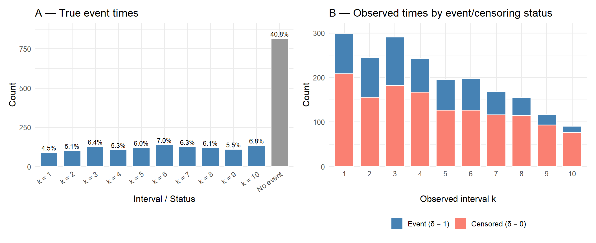
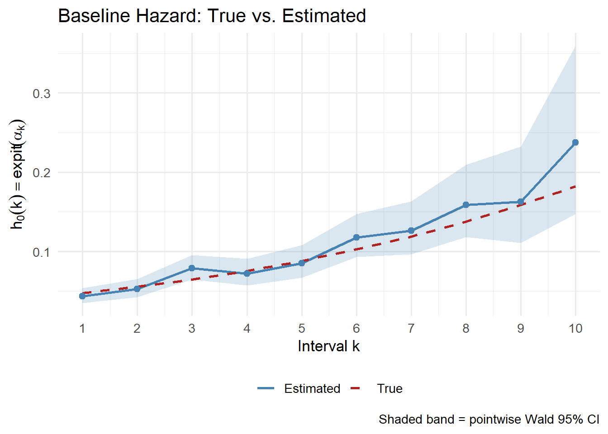
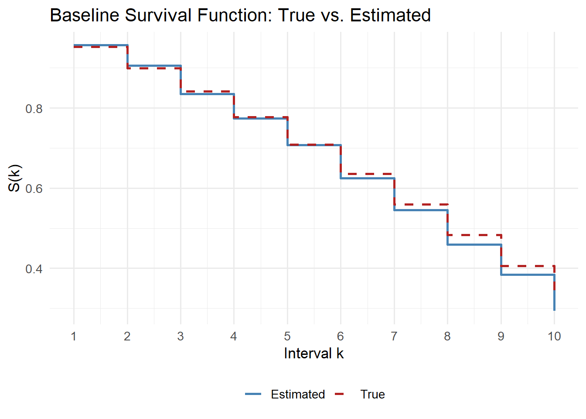

library(tidyverse)
set.seed(42)Simulation from a Pooled Logistic Regression Model
Discrete Survival Analysis & Sequential Propensity Scores
1 Background
1.1 Discrete Survival Analysis
Suppose that event times can only happen at times \(\tau_1, \dots, \tau_K, \infty\), where \(\infty\) means that no event was observed within \([0, \tau_K]\). The survival function at time \(k\) is defined analogously to the continuous case:
\[ S(k) = \Pr(T > k). \]
The discrete-time hazard function at time \(k\) is a conditional probability:
\[ h(k) = \Pr(T = k \mid T \geq k). \]
Some useful relationships follow from these definitions:
\[ \begin{aligned} \Pr(T = k) &= h(k)\, S(k-1), \\ S(k) &= S(k-1)\bigl(1 - h(k)\bigr), \\ S(k) &= \prod_{j=1}^{k} \bigl(1 - h(j)\bigr). \end{aligned} \]
Taking logarithms yields the cumulative hazard:
\[ H(k) = -\log S(k) = -\sum_{j=1}^{k} \log\bigl(1 - h(j)\bigr). \]
1.2 Pooled Logistic Model
The discrete-time hazard is linked to covariates via a logistic model:
\[ \operatorname{logit}\, h(k \mid \mathbf{X}_{ik}) = \operatorname{logit}\, \Pr(T = k \mid T \geq k,\, \mathbf{X}_{ik}) = \alpha_k + \boldsymbol{\beta}^\top \mathbf{X}_{ik}, \]
where \(\alpha_k\) are time-specific intercepts (encoding the baseline hazard) and \(\mathbf{X}_{ik}\) are (possibly time-varying) covariates.
1.3 Sequential Propensity Score
Let \(T\) be the time of treatment initiation, \(T \in \{1, \dots, K, \infty\}\), and define \(A_k = \mathbf{1}[T = k]\). The sequential propensity score is
\[ e_k(\bar{L}_k) = \Pr(A_k = 1 \mid \bar{A}_{k-1} = 0,\, \bar{L}_k). \]
Because \(\{T \geq k\} \equiv \{\bar{A}_{k-1} = 0\}\), we have the equivalence
\[ \boxed{e_k(\bar{L}_k) = h(k \mid \bar{L}_k).} \]
Estimating a sequential propensity score is therefore equivalent to estimating the discrete-time hazard of treatment. The joint probability of a treatment history up to month \(k\) factorises as
\[ \Pr(T = k \mid \bar{L}_k) = h(k \mid \bar{L}_k) \prod_{j < k} \bigl(1 - h(j \mid \bar{L}_j)\bigr), \]
which is the foundation for inverse probability weights in longitudinal causal inference.
2 Setup
3 Step 1 — Define Parameters
We choose \(K = 10\) discrete time intervals and specify:
- Baseline hazard \(\alpha_k\): a linearly increasing sequence on the logit scale (risk increases over time).
- Covariate effects: \(\beta_1 = 0.8\) for a continuous covariate \(X_1\) and \(\beta_2 = -0.5\) for a binary covariate \(X_2\).
n <- 2000 # number of individuals
K <- 10 # number of discrete time points
# Time-specific intercepts alpha_k (baseline log-odds of the hazard)
alpha <- seq(-3, -1.5, length.out = K)
# Covariate coefficients
beta_x1 <- 0.8 # continuous covariate
beta_x2 <- -0.5 # binary covariate4 Step 2 — Generate Baseline Covariates
Each individual has two fixed baseline covariates:
\[ X_1 \sim \mathcal{N}(0,\,1), \qquad X_2 \sim \text{Bernoulli}(0.4). \]
X1 <- rnorm(n, mean = 0, sd = 1) # continuous
X2 <- rbinom(n, size = 1, prob = 0.4) # binary5 Step 3 — Simulate Discrete Event Times
At each interval \(k\), the discrete-time hazard for individual \(i\) is
\[ h(k \mid X_i) = \operatorname{expit}(\alpha_k + \beta_1 X_{1i} + \beta_2 X_{2i}). \]
We draw \(A_k \sim \text{Bernoulli}\bigl(h(k \mid X_i)\bigr)\) only for those still at risk (\(T \geq k\)). The event time is the first \(k\) at which \(A_k = 1\). Individuals for whom no event occurs by \(\tau_K\) are assigned \(T = \infty\).
simulate_event_times <- function(n, K, alpha, beta_x1, beta_x2, X1, X2) {
T_event <- rep(Inf, n) # Inf = no event within [tau_1, tau_K]
at_risk <- rep(TRUE, n) # everyone starts at risk
for (k in seq_len(K)) {
# Linear predictor for interval k
eta_k <- alpha[k] + beta_x1 * X1 + beta_x2 * X2
# Discrete-time hazard h(k | X_i)
h_k <- plogis(eta_k)
# Bernoulli trial only for individuals still at risk
A_k <- rbinom(n, size = 1, prob = h_k * at_risk)
# Record event time for newly treated individuals
T_event[A_k == 1 & at_risk] <- k
# Remove newly treated from risk set
at_risk <- at_risk & (A_k == 0)
}
return(T_event)
}
T_event <- simulate_event_times(n, K, alpha, beta_x1, beta_x2, X1, X2)
cat("Event rate (within follow-up):", round(mean(T_event <= K), 3), "\n")Event rate (within follow-up): 0.592 6 Step 4 — Introduce Independent Censoring
We draw a random censoring time \(C \sim \text{Uniform}\{1, \dots, K\}\), independently of covariates and the event process. The observed data are
\[ \tilde{T}_i = \min(T_i, C_i), \qquad \delta_i = \mathbf{1}[T_i \leq C_i]. \]
C_time <- sample(1:K, n, replace = TRUE) # censoring times
T_obs <- pmin(T_event, C_time) # observed time
delta <- as.integer(T_event <= C_time) # event indicator
cat("Observed event rate:", round(mean(delta), 3), "\n")Observed event rate: 0.316 6.1 Visualisation of Simulated Event Times
The plots below summarise the distribution of simulated times across the \(K\) intervals. The left panel shows true event times \(T_i\) (those with \(T_i \leq K\) are events; \(T_i = \infty\) is shown as a separate “No event” bar). The right panel breaks the observed times \(\tilde{T}_i\) down by whether the individual experienced the event (\(\delta = 1\)) or was censored (\(\delta = 0\)), illustrating how censoring redistributes observations across intervals.
library(patchwork)
# --- Panel A: distribution of true event times ---
true_times_df <- tibble(
T_true = T_event,
label = if_else(T_event <= K, paste0("k = ", T_event), "No event")
) |>
mutate(label = factor(label,
levels = c(paste0("k = ", 1:K), "No event"))) |>
count(label) |>
mutate(pct = n / sum(n) * 100)
p1 <- ggplot(true_times_df, aes(x = label, y = n,
fill = label == "No event")) +
geom_col(colour = "white", width = 0.75) +
geom_text(aes(label = sprintf("%.1f%%", pct)),
vjust = -0.4, size = 3) +
scale_fill_manual(values = c("FALSE" = "steelblue", "TRUE" = "grey60"),
guide = "none") +
scale_y_continuous(expand = expansion(mult = c(0, 0.12))) +
labs(
title = "A — True event times",
x = "Interval / Status",
y = "Count"
) +
theme_minimal(base_size = 12) +
theme(axis.text.x = element_text(angle = 35, hjust = 1))
# --- Panel B: observed times stratified by event / censoring ---
obs_times_df <- tibble(
interval = T_obs,
status = factor(delta, levels = c(1, 0),
labels = c("Event (\u03b4 = 1)", "Censored (\u03b4 = 0)"))
) |>
count(interval, status)
p2 <- ggplot(obs_times_df, aes(x = factor(interval), y = n, fill = status)) +
geom_col(colour = "white", width = 0.75, position = "stack") +
scale_fill_manual(values = c("Event (\u03b4 = 1)" = "steelblue",
"Censored (\u03b4 = 0)" = "salmon")) +
scale_y_continuous(expand = expansion(mult = c(0, 0.08))) +
labs(
title = "B — Observed times by event/censoring status",
x = "Observed interval k",
y = "Count",
fill = NULL
) +
theme_minimal(base_size = 12) +
theme(legend.position = "bottom")
p1 + p2
7 Step 5 — Expand to Person-Period Format
The key structural step: each individual \(i\) contributes one row per interval they remained at risk, up to and including \(\tilde{T}_i\). The binary outcome is
\[ Y_{ik} = \begin{cases} 1 & \text{if } k = \tilde{T}_i \text{ and } \delta_i = 1, \\ 0 & \text{otherwise.} \end{cases} \]
expand_to_long <- function(id, T_obs, delta, X1, X2) {
map_dfr(seq_along(id), function(i) {
n_periods <- T_obs[i]
if (n_periods == 0) return(NULL)
intervals <- seq_len(n_periods)
tibble(
id = id[i],
interval = intervals,
Y = as.integer(intervals == T_obs[i] & delta[i] == 1),
X1 = X1[i],
X2 = X2[i]
)
})
}
long_df <- expand_to_long(
id = 1:n,
T_obs = T_obs,
delta = delta,
X1 = X1,
X2 = X2
)
cat("Rows in long format:", nrow(long_df),
"(expected ~", sum(T_obs), ")\n")Rows in long format: 9169 (expected ~ 9169 )glimpse(long_df)Rows: 9,169
Columns: 5
$ id <int> 1, 1, 1, 2, 2, 3, 3, 3, 4, 4, 4, 4, 4, 4, 4, 4, 4, 5, 5, 5, 5…
$ interval <int> 1, 2, 3, 1, 2, 1, 2, 3, 1, 2, 3, 4, 5, 6, 7, 8, 9, 1, 2, 3, 4…
$ Y <int> 0, 0, 1, 0, 0, 0, 0, 0, 0, 0, 0, 0, 0, 0, 0, 0, 0, 0, 0, 0, 0…
$ X1 <dbl> 1.3709584, 1.3709584, 1.3709584, -0.5646982, -0.5646982, 0.36…
$ X2 <int> 0, 0, 0, 1, 1, 0, 0, 0, 1, 1, 1, 1, 1, 1, 1, 1, 1, 0, 0, 0, 0…8 Step 6 — Fit the Pooled Logistic Regression
We model interval as a factor so that each level gets its own intercept \(\hat{\alpha}_k\), recovering the full shape of the baseline hazard without imposing any smoothness assumption.
\[ \operatorname{logit}\, h(k \mid X_i) = \alpha_k + \beta_1 X_{1i} + \beta_2 X_{2i}. \]
long_df <- long_df |>
mutate(interval_f = factor(interval, levels = 1:K))
fit_plr <- glm(
Y ~ interval_f + X1 + X2 - 1, # -1: factor supplies all intercepts
data = long_df,
family = binomial(link = "logit")
)
summary(fit_plr)
Call:
glm(formula = Y ~ interval_f + X1 + X2 - 1, family = binomial(link = "logit"),
data = long_df)
Coefficients:
Estimate Std. Error z value Pr(>|z|)
interval_f1 -3.09009 0.11584 -26.675 < 2e-16 ***
interval_f2 -2.88766 0.11639 -24.810 < 2e-16 ***
interval_f3 -2.45856 0.10749 -22.873 < 2e-16 ***
interval_f4 -2.55093 0.12562 -20.307 < 2e-16 ***
interval_f5 -2.37102 0.13257 -17.885 < 2e-16 ***
interval_f6 -2.01627 0.13281 -15.181 < 2e-16 ***
interval_f7 -1.93209 0.15280 -12.644 < 2e-16 ***
interval_f8 -1.66853 0.17387 -9.597 < 2e-16 ***
interval_f9 -1.63924 0.22671 -7.231 4.81e-13 ***
interval_f10 -1.16757 0.30057 -3.885 0.000103 ***
X1 0.74047 0.04648 15.931 < 2e-16 ***
X2 -0.55756 0.08988 -6.203 5.52e-10 ***
---
Signif. codes: 0 '***' 0.001 '**' 0.01 '*' 0.05 '.' 0.1 ' ' 1
(Dispersion parameter for binomial family taken to be 1)
Null deviance: 12710.9 on 9169 degrees of freedom
Residual deviance: 4236.6 on 9157 degrees of freedom
AIC: 4260.6
Number of Fisher Scoring iterations: 69 Step 7 — Compare Estimated vs. True Parameters
coef_est <- coef(fit_plr)
ci <- confint.default(fit_plr) # Wald CIs
results <- tibble(
parameter = names(coef_est),
true_value = c(alpha, beta_x1, beta_x2),
estimate = coef_est,
lower = ci[, 1],
upper = ci[, 2]
) |>
mutate(
covers_truth = lower <= true_value & true_value <= upper
)
knitr::kable(results, digits = 3,
caption = "Estimated vs. true parameters (Wald 95% CI)")| parameter | true_value | estimate | lower | upper | covers_truth |
|---|---|---|---|---|---|
| interval_f1 | -3.000 | -3.090 | -3.317 | -2.863 | TRUE |
| interval_f2 | -2.833 | -2.888 | -3.116 | -2.660 | TRUE |
| interval_f3 | -2.667 | -2.459 | -2.669 | -2.248 | TRUE |
| interval_f4 | -2.500 | -2.551 | -2.797 | -2.305 | TRUE |
| interval_f5 | -2.333 | -2.371 | -2.631 | -2.111 | TRUE |
| interval_f6 | -2.167 | -2.016 | -2.277 | -1.756 | TRUE |
| interval_f7 | -2.000 | -1.932 | -2.232 | -1.633 | TRUE |
| interval_f8 | -1.833 | -1.669 | -2.009 | -1.328 | TRUE |
| interval_f9 | -1.667 | -1.639 | -2.084 | -1.195 | TRUE |
| interval_f10 | -1.500 | -1.168 | -1.757 | -0.578 | TRUE |
| X1 | 0.800 | 0.740 | 0.649 | 0.832 | TRUE |
| X2 | -0.500 | -0.558 | -0.734 | -0.381 | TRUE |
All confidence intervals should cover the true values, confirming that the pooled logistic model correctly recovers the data-generating parameters.
10 Step 8 — Recover and Plot the Baseline Hazard
Back-transforming the \(\hat{\alpha}_k\) estimates via \(\operatorname{expit}\) recovers the estimated baseline hazard \(\hat{h}_0(k)\).
baseline <- results |>
filter(str_detect(parameter, "interval_f")) |>
mutate(
k = 1:K,
h_true = plogis(true_value),
h_est = plogis(estimate),
h_lower = plogis(lower),
h_upper = plogis(upper)
)
ggplot(baseline, aes(x = k)) +
geom_ribbon(aes(ymin = h_lower, ymax = h_upper),
alpha = 0.2, fill = "steelblue") +
geom_line(aes(y = h_est, colour = "Estimated"), linewidth = 1) +
geom_line(aes(y = h_true, colour = "True"),
linewidth = 1, linetype = "dashed") +
geom_point(aes(y = h_est), colour = "steelblue", size = 2) +
scale_colour_manual(
values = c("Estimated" = "steelblue", "True" = "firebrick")
) +
scale_x_continuous(breaks = 1:K) +
labs(
title = "Baseline Hazard: True vs. Estimated",
x = "Interval k",
y = expression(h[0](k) == expit(alpha[k])),
colour = NULL,
caption = "Shaded band = pointwise Wald 95% CI"
) +
theme_minimal(base_size = 13) +
theme(legend.position = "bottom")
11 Step 9 — Recover and Plot the Survival Function
The discrete-time survival function is recovered via the product-limit formula:
\[ \hat{S}(k) = \prod_{j=1}^{k} \bigl(1 - \hat{h}_0(j)\bigr). \]
baseline <- baseline |>
mutate(
S_true = cumprod(1 - h_true),
S_est = cumprod(1 - h_est)
)
ggplot(baseline, aes(x = k)) +
geom_step(aes(y = S_est, colour = "Estimated"), linewidth = 1) +
geom_step(aes(y = S_true, colour = "True"),
linewidth = 1, linetype = "dashed") +
scale_colour_manual(
values = c("Estimated" = "steelblue", "True" = "firebrick")
) +
scale_x_continuous(breaks = 1:K) +
labs(
title = "Baseline Survival Function: True vs. Estimated",
x = "Interval k",
y = "S(k)",
colour = NULL
) +
theme_minimal(base_size = 13) +
theme(legend.position = "bottom")
12 Summary
The table below recaps the full simulation and estimation pipeline.
| Step | Action | Key object |
|---|---|---|
| 1 | Define \(\alpha_k\), \(\beta_1\), \(\beta_2\) | alpha, beta_x1, beta_x2 |
| 2 | Draw baseline covariates \(X_1\), \(X_2\) | X1, X2 |
| 3 | Sequential Bernoulli trials \(\Rightarrow\) event times | T_event |
| 4 | Apply independent censoring | T_obs, delta |
| 5 | Expand to person-period (long) format | long_df |
| 6 | Fit PLR via glm(..., binomial) |
fit_plr |
| 7 | Compare \(\hat{\theta}\) vs. \(\theta^*\) | results |
| 8 | Recover \(\hat{h}_0(k) = \operatorname{expit}(\hat{\alpha}_k)\) | baseline |
| 9 | Recover \(\hat{S}(k) = \prod_{j \leq k}(1-\hat{h}_0(j))\) | baseline |